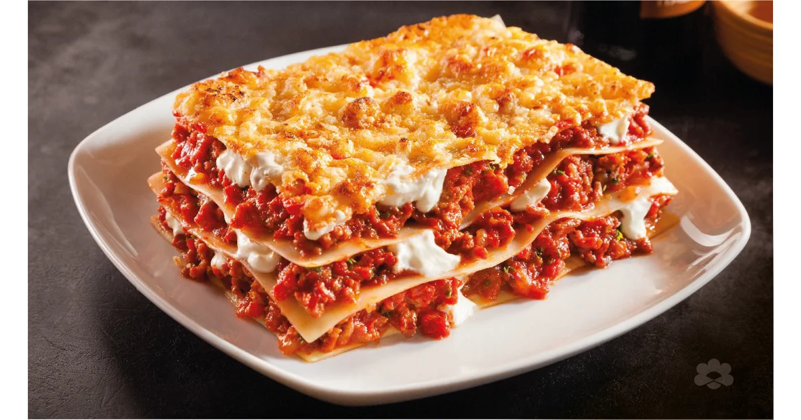

Home

Description
This classic lasagna is a rich and comforting dish layered with tender pasta sheets, savory meat sauce, creamy béchamel, and melty mozzarella cheese. It's a favorite in many households for its hearty flavor and satisfying texture.
Whether you're cooking for a big family dinner or meal prepping for the week, this lasagna recipe is a guaranteed hit. It can also be made vegetarian by swapping the meat with roasted vegetables or lentils.
Ingredients
- 12 lasagna noodles
- 1 lb ground beef or Italian sausage
- 1 jar (24 oz) marinara sauce
- 2 cups ricotta cheese
- 2 cups shredded mozzarella cheese
- 1/2 cup grated Parmesan cheese
- 1 egg
- Salt, pepper, and Italian seasoning to taste
Steps
- Preheat oven to 375°F (190°C).
- Cook lasagna noodles according to package instructions; drain and set aside.
- In a skillet, cook ground meat until browned. Drain excess fat, then add marinara sauce and simmer for 10 minutes.
- In a bowl, mix ricotta cheese, egg, Parmesan, and seasoning.
- In a baking dish, spread a layer of meat sauce, then noodles, then ricotta mixture, then mozzarella. Repeat layers until ingredients are used up.
- Finish with a layer of meat sauce and a generous topping of mozzarella and Parmesan cheese.
- Bake for 30–35 minutes, or until cheese is bubbly and golden. Let rest for 10 minutes before serving.